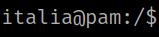
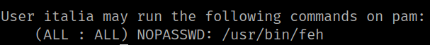

4.5 Log in as user "italy"
1. On the “Reverse Shell” you already have change to user “italy” with the password “rootisCLOSE”.
www-data@pam:/$ su italia
Output:

2. Enumerate sudoers.
italia@pam:/$ sudo -l
Output:

There's an executable file “feh” that you can execute without any password,